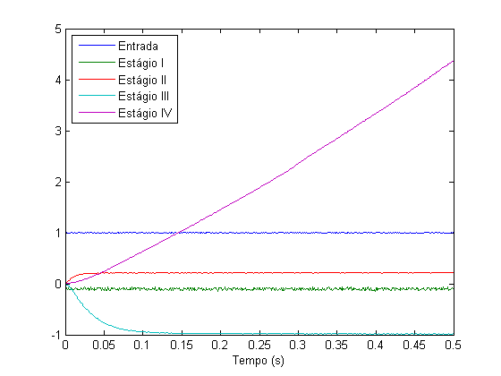
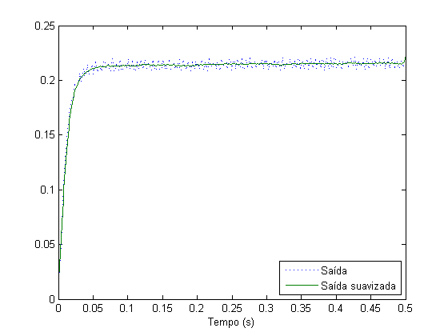
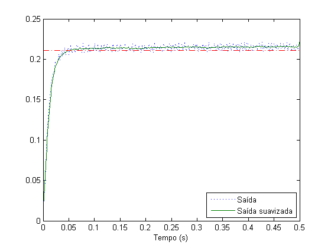
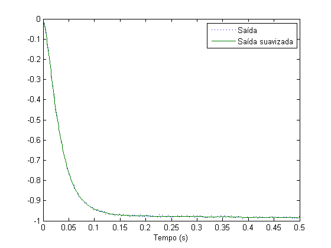
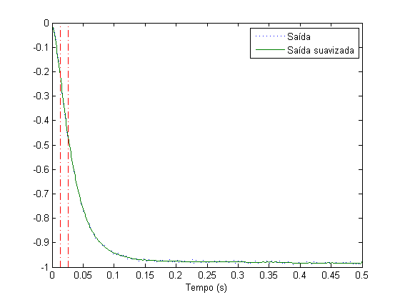
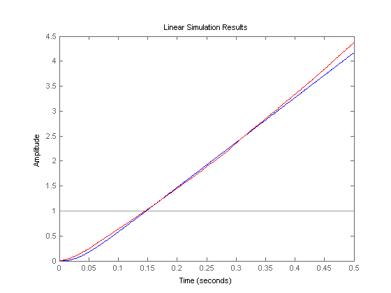

Determinação dos parâmetros
Determinar os parâmetros da planta experimental, com base nos dados coletados com o auxílio do ambiente LabView e Elvis
Contents
Dados coletados
load('single-sample.mat'); plot(t, se, t, s1, t, s2, t, s3, t, s4); legend('Entrada', 'Estágio I', 'Estágio II', 'Estágio III', 'Estágio IV', 'Location', 'NorthWest'); xlabel('Tempo (s)');

Estágio I: K1
entrada_mediana = median(se); saida_mediana = median(s1); k1 = saida_mediana/entrada_mediana
k1 = -0.0995
Estágio II: K2
s2sm = smooth(s2, 17); plot(t, s2, ':', t, s2sm); legend('Saída', 'Saída suavizada', 'Location', 'SouthEast'); xlabel('Tempo (s)'); k12 = median(s2sm(end-20:end)); k2 = k12/k1
k2 = -2.1626

Estágio II: Tau2
line([0, 0.5], [k12, k12]*0.98, 'Color', 'red', 'LineStyle', '-.'); tau2 = t(find(s2sm >= k12*0.98, 1))/4
tau2 =
0.0130

Estágio III: K3
s3sm = smooth(s3, 17); plot(t, s3, ':', t, s3sm); legend('Saída', 'Saída suavizada'); xlabel('Tempo (s)'); k123 = median(s3sm(end-20:end)); k3 = k123/k12
k3 = -4.5739

Estágio III: Tau3
Encontrar y(tau2) e y(2*tau2)
line(tau2*[1, 1], [-1, 0], 'Color', 'red', 'LineStyle', '-.'); line(tau2*[2, 2], [-1, 0], 'Color', 'red', 'LineStyle', '-.'); ytau = s3sm(find(t >= tau2, 1)); y2tau = s3sm(find(t >= 2*tau2, 1)); a = ytau/k123; b = y2tau/k123;

Encontrar tau3
coef1 = - (1-b-exp(-2)) / (1-a-exp(-1));
coef2 = ((1-b)*exp(-1)-(1-a)*exp(-2)) / (1-a-exp(-1));
x1x2 = roots([1, coef1, coef2]);
x = x1x2(1); % x1x2(2) é exp(-1)
tau3 = -tau2/log(x)
tau3 =
0.0232
Estágio IV: K4
inclinacao = (s4(400)-s4(100))/0.3; k4 = inclinacao/k123
k4 = -9.1333
Simulação e verificação
s = tf('s'); G1 = tf(k1); G2 = k2/(tau2*s+1); G3 = k3/(tau3*s+1); G4 = k4/s; lsim(G1*G2*G3*G4, se, t); hold on plot(t, s4, 'r');
